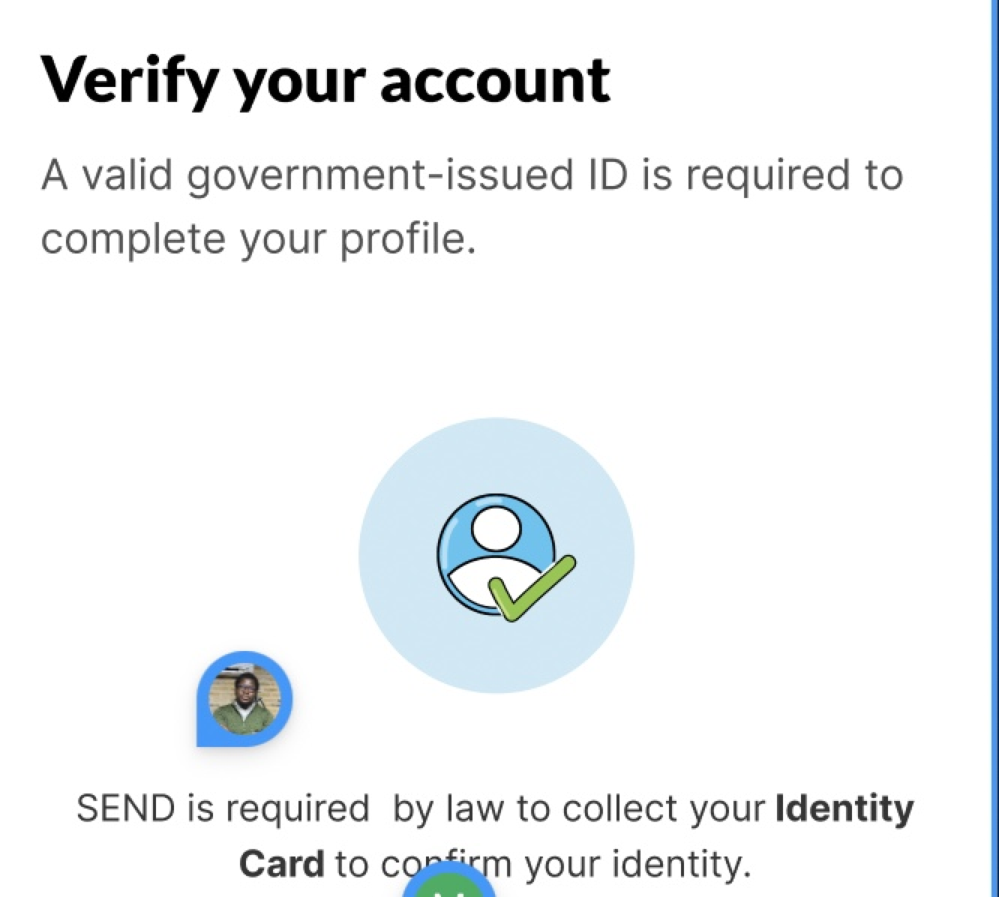

Scope
As a cross-border payment product, Send requires a certain level of KYC checks as part of anti-fraud setups and government regulations. However, oftentimes, users find it difficult to complete this verification process due to the technicalities arising from expected actions like live image capture.
Role: Content Design.
Expected Fix
Working on these two projects, I was tasked with making it easier for users to complete their KYC verification process with little or no help from the Customer Support team, thereby reducing the number of incomplete KYC checks and successful onboarding on both apps.
First fix - introducing the user to requirements early on
In the onboarding flow, users are meant to provide basic personal details first before moving on to the third-party platform for verification. To prepare them properly, as soon as they were done with the basics, I ensured that the first screen afterward told them exactly what they needed to complete the verification – a government-issued ID.
